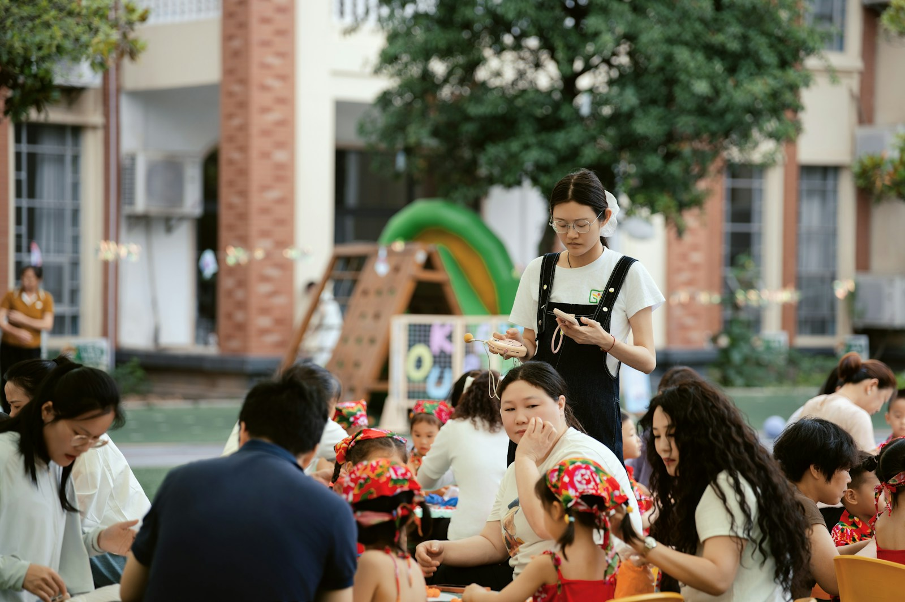
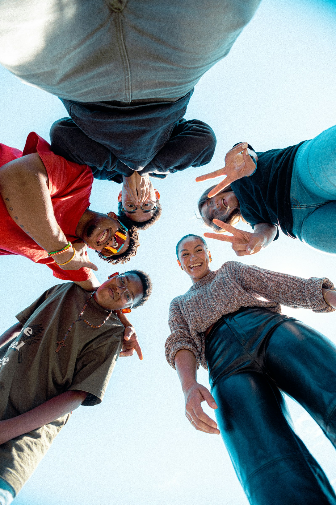

Educação para o futuro
Reforço escolar, incentivo à leitura e inclusão digital para crianças e jovens.
Conhecer projetoEducação, acolhimento e oportunidade
A Horizonte Azul conecta pessoas e recursos para fortalecer comunidades e construir oportunidades duradouras para crianças, jovens e famílias.

Quem somos
Somos uma organização sem fins lucrativos dedicada a reduzir desigualdades por meio de ações de educação, segurança alimentar e formação profissional. Atuamos em parceria com moradores, voluntários e apoiadores para desenvolver soluções adequadas às necessidades de cada comunidade.
Nosso impacto
Frentes de atuação
Reforço escolar, incentivo à leitura e inclusão digital para crianças e jovens.
Conhecer projetoDistribuição de alimentos e oficinas sobre nutrição e aproveitamento integral.
Conhecer projetoCursos, mentoria e apoio para ampliar oportunidades de trabalho e renda.
Conhecer projetoCompartilhe seu tempo e suas habilidades. Cada pessoa voluntária fortalece nossa rede e ajuda a ampliar o alcance das iniciativas.
Faça parte da rede
Fale conosco
Rua das Palmeiras, 120, São Paulo - SP, 01234-000